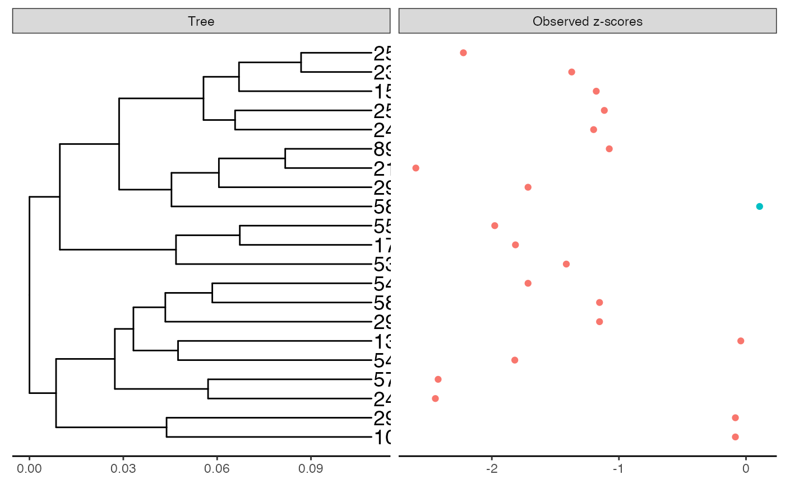
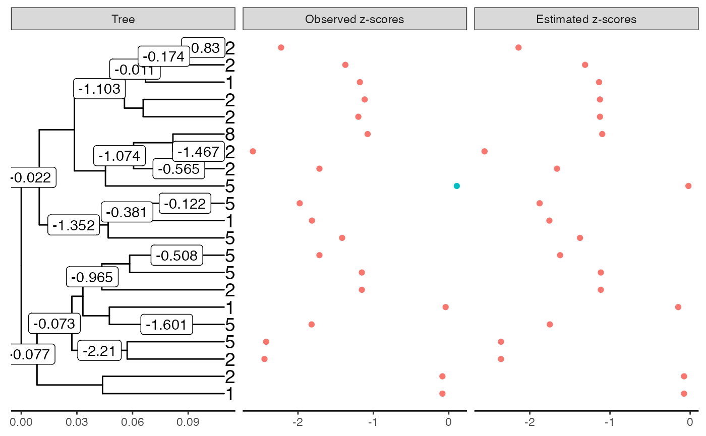

library(zazou) #> Registered S3 method overwritten by 'treeio': #> method from #> root.phylo ape library(tictoc)
data(chlamydiae)
z-scores
pval_obs <- test_kruskalwallis(chlamydiae$X, chlamydiae$Y)$p.value zsco_obs <- p2z(pval_obs)
Tree
tree <- force_ultrametric(chlamydiae$tree) N_branch <- length(tree$edge.length) plot_shifts(tree, NA, obs_scores = zsco_obs) #> Warning: Removed 41 rows containing missing values (geom_label).

Shift estimation
L-BFGS-B
tic() est_lbfgsb <- estimate_shifts(zscores = zsco_obs, lambda = 0.1, tree = tree, alphaOU = 1, method = "L-BFGS-B") toc() #> 0.01 sec elapsed est_lbfgsb #> Tree is binary with 21 leafs and 40 branches #> Covariance matrix has been estimated from an OU with alpha = 1 and sigma = 7.198 #> --- #> Method: L-BFGS-B #> Regularization parameter: lambda = 0.1 #> Objective value: 1.308 #> BIC: 84.446 #> pBIC: 162.43 #> --- #> Estimated shifts: -0.077 0 0 0 -0.073 -2.21 0 0 0 0 ... #> 17 shifts have been identified (ie 57.5 % of sparsity) #> A parsimonious solution would involve 16 shifts #> --- #> Observed z-scores: -0.084 -0.084 -2.444 -2.423 -1.819 -0.041 -1.153 -1.153 -1.715 0.107 ... #> Estimated z-scores: -0.077 -0.077 -2.359 -2.359 -1.75 -0.149 -1.114 -1.114 -1.622 -0.022 ... #> 21 z-scores have been shifted (ie 0 % of sparsity) plot(est_lbfgsb) #> Warning: Removed 24 rows containing missing values (geom_label).

Shooting
set.seed(42) tic() est_shooting <- estimate_shifts(zscores = zsco_obs, lambda = 0.1, tree = tree, alphaOU = 1, method = "lasso") toc() #> 0.064 sec elapsed est_shooting #> Tree is binary with 21 leafs and 40 branches #> Covariance matrix has been estimated from an OU with alpha = 1 and sigma = 7.198 #> --- #> Method: lasso #> Regularization parameter: lambda = 0.1 #> Objective value: 1.308 #> BIC: 84.446 #> pBIC: 162.43 #> --- #> Estimated shifts: -0.076 0 0 0 -0.073 -2.21 0 0 0 0 ... #> 17 shifts have been identified (ie 57.5 % of sparsity) #> A parsimonious solution would involve 16 shifts #> --- #> Observed z-scores: -0.084 -0.084 -2.444 -2.423 -1.819 -0.041 -1.153 -1.153 -1.715 0.107 ... #> Estimated z-scores: -0.076 -0.076 -2.359 -2.359 -1.75 -0.149 -1.114 -1.114 -1.622 -0.022 ... #> 21 z-scores have been shifted (ie 0 % of sparsity) plot(est_shooting) #> Warning: Removed 24 rows containing missing values (geom_label).

Comparisons
est_lbfgsb$objective_value #> [1] 1.308043 est_shooting$objective_value #> [1] 1.308043 est_lbfgsb$optim_info #> $counts #> function gradient #> 44 44 #> #> $convergence #> [1] 0 #> #> $message #> [1] "CONVERGENCE: REL_REDUCTION_OF_F <= FACTR*EPSMCH" #> #> $supp_arg #> list() est_shooting$optim_info #> $iterations #> [1] 64 #> #> $last_progress #> [1] 6.584924e-09 #> #> $supp_arg #> list()
library(ggplot2) theme_set(theme_minimal()) qplot(est_lbfgsb$zscores_obs, est_lbfgsb$zscores_est) + geom_abline() + geom_vline(xintercept = 0)
qplot(est_shooting$zscores_obs, est_shooting$zscores_est) + geom_abline() + geom_vline(xintercept = 0)

qplot(-est_shooting$zscores_est, -est_lbfgsb$zscores_est) + geom_abline() + scale_x_log10() + scale_y_log10()